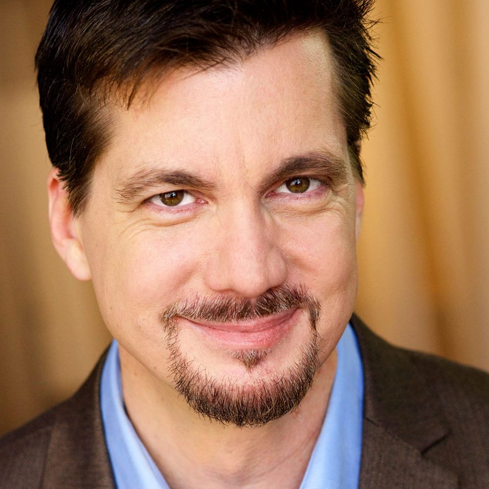
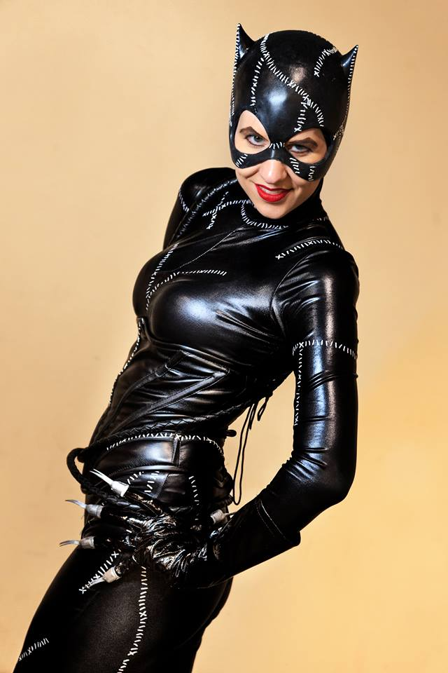
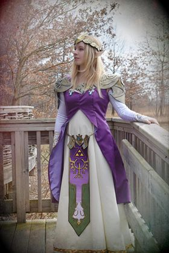

Special Guests
D.C. Douglas

He’s baaaaack! And he’s brought his revamped 2017 Notorious [Zombie Related] Fanfic Show with him!
Videogame fans know him as Albert Wesker in seven “Resident Evil” games — from 2007’s “Umbrella Chronicles”
to 2016’s “Umbrella Corp” — a decade of badassery. Also: Legion in “Mass Effect” 2 & 3, Kamoshida in "Persona 5,"
X Drake in “One Piece,” Jasley in “Mobile Suit Gundam: IBO,” Shoot McMahon in “Hunter x Hunter,” and much more!
Check him out on IMDB and DCDouglas.com to spot more titles you know. Just remember, if you only see one
thing of his this weekend, make sure it’s his 2017 Notorious [Zombie Related] Fanfic Show!
Celebrity Cosplayers
Sheikchica Cosplay

Going by the name Sheikahchica Cosplay, Lindsay has been cosplaying since 2009, with 65+ costumes
(including variations) under her belt. She has been featured on numerous websites, such as Kotaku
and Geeks Are Sexy. She has also appeared in the Women VS Cosplay 2017 calendar and the Star Wars
40 Years of the Force special edition magazine by Time Magazine. She currently works with the Tangent
Bound Network as a con correspondent. Also an actress, she has appeared in Marvel's The Avengers,
and is the female lead in the upcoming movie Forever Knight by Curseborne Films.
Lindsay believes that CAUSEplay is about the impact you leave behind - encouraging others to follow
their dreams, being a hero to those who need one, and leaving smiles in your wake.
Nicole Vaia

Nicole Vaia is the cosplayer behind "Northern Star Cosplay" which is based out of Bowling Green, Ohio.
She has been featured on multiple cosplay blogs and has won multiple cosplay competitions.
When she's not cosplaying, she is a professional princess performer throughout northwest and northeast
Ohio. Nicole's main goal is to inspire, create, and fall deeper into the wonderful world known as the
cosplay community.
Check up on this page to be updated on the special guests that will be featured at Animarathon XVI! Each year Animarathon invites special guests to Bowling Green Ohio to interact with fans and speak about their work. Previous Animarathon Special Guests have included Voice Actors and Actresses, Artists, Writers, Online Personas, and more!